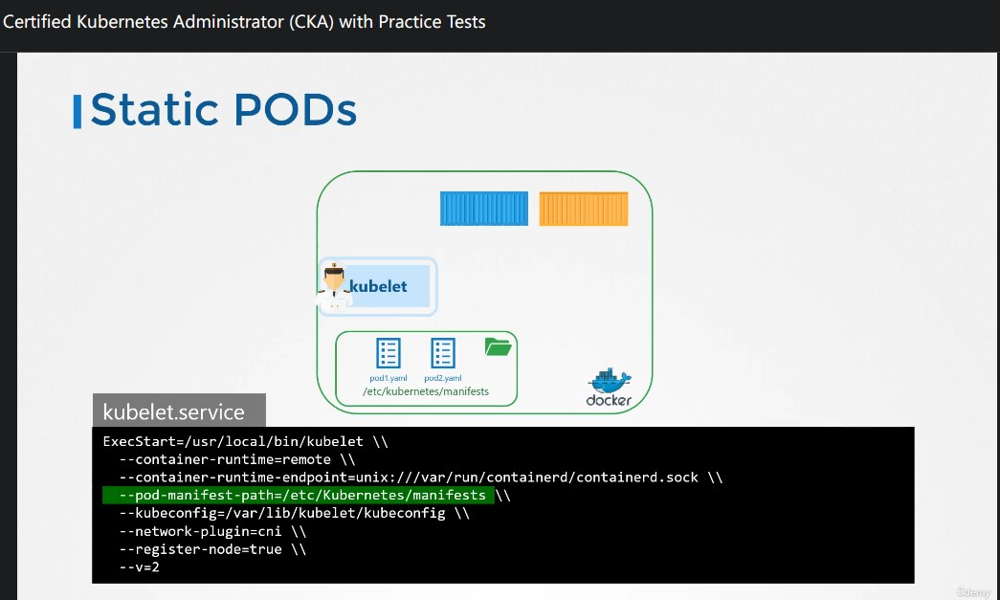

CKA_Note_Section_3_Scheduling
Contents
50. Manual Scheduling
在 有 kube-scheduler 的情況下，我們可以在 pod definition YAML 裡面定義 pod.spec.nodeName: <worker node name> 來把 pod 放在指定 worker node。
在 沒有 kube-scheduler 的情況下，必須要以 json 格式 POST 到 api-server。BTW，我找不到 docs 耶 = =
▲ 使用 curl
69. DaemonSets
daemondset 能夠確保每一個 node 都有一個 pod 運作，當 node join cluster 的時候會被新增，反之亦然。
在 Kubernetes v1.12 之前， daemondset 的實作方式是透過 nodeSelector，之後是透過 NodeAffinity and default scheduler。
▲ kube-proxy 就是一個使用的例子。
72. Static Pods
示範在沒有 control plane (包含 api-server) 的情況下，如何在 worker node 建立 pod。 (只能建立 pod)
只要把 pod-definition.yml 放在 /etc/kubernetes/manifests/ (預設) 這個資料夾底下 kubelet 就會幫我們建立 pod，任何刪除及異動都會被執行。

▲ 預設路徑是可以被更改的。
▲ 或者傳送 config file 進去。
▲ static pod 也可以被 kubectl get 到，不過 kubectl 並沒辦法去 edit/delete static pod。
原理是當 kubelet 建立 static pod 時會建立一個 mirror pod 在 api-server 上。 詳情 Create static Pods

▲ 使用情形就是 control plane 上面的元件 (例如: api-server, etcd, controller-manager) (以 kubeadm 來說)
| Static PODs | DaemonSets |
|---|---|
由 kubelet 發起建立 |
由 api-server 發起建立 (DaemonSet controller) |
| 用途: 部屬 control plane 所需元件 | 用途: 部屬 monitoring agent, logging agent |
都被 kube-scheduler 忽略 |
都被 kube-scheduler 忽略 |
▲ static pod 與 daemonset 的差異
75. Multiple Schedulers
Kubernetes 允許多個 kube-scheduler 同時存在 (使用者可以自行設計不同邏輯的 scheduler)。
下面截取 /etc/kubernetes/manifests/kube-scheduler.yaml 重要片段解釋
|
|
- 預設沒有給定
--scheduler-name=的話就是叫default-scheduler。 若要擁有第二個kube-scheduler的話就必須改名子 --leader-elect=true是當有 multi master 時 (意味者有 multikube-scheduler) 只能選一台當作 master，其餘作為備援。- 指定
pod使用某個 scheduler 的話可以在pod.spec.schedulerName給定 scheduler name。
custom scheduler
|
|
從 /etc/kubernetes/manifests/kube-scheduler.yaml 複製出來，想要建立一個不同名子的 scheduler 需要改的東西如上。還有 pod name
--port改成一個沒有被使用的。--secure-port預設 scheduler 會使用10259來提供 HTTPS authentication and authorization，把它改成0來 disabled。
|
|
Author 老柯
LastMod 2021-11-24